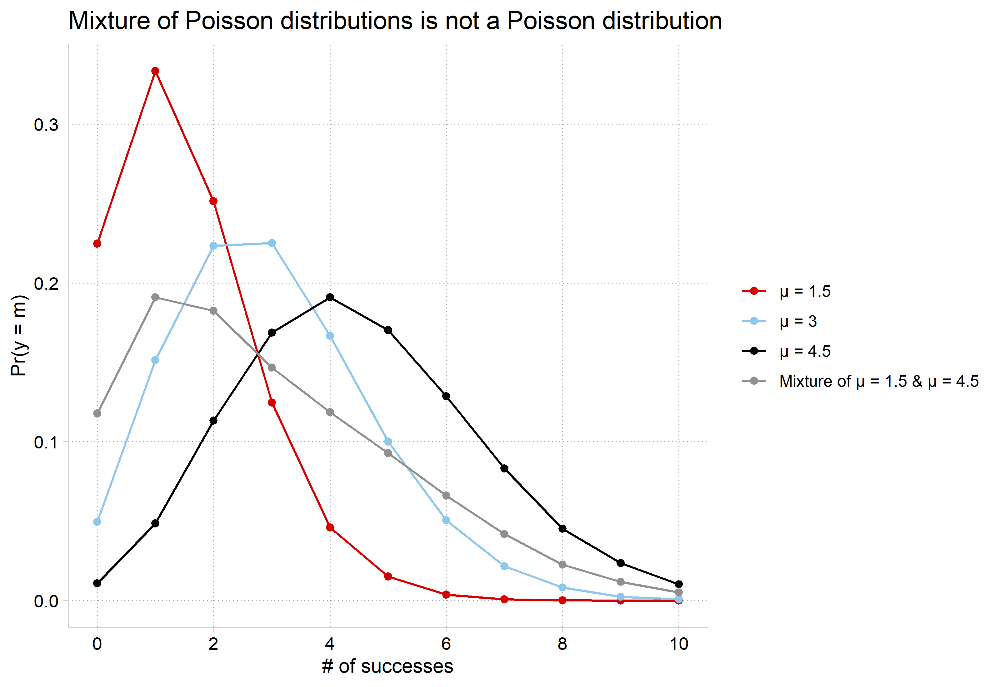
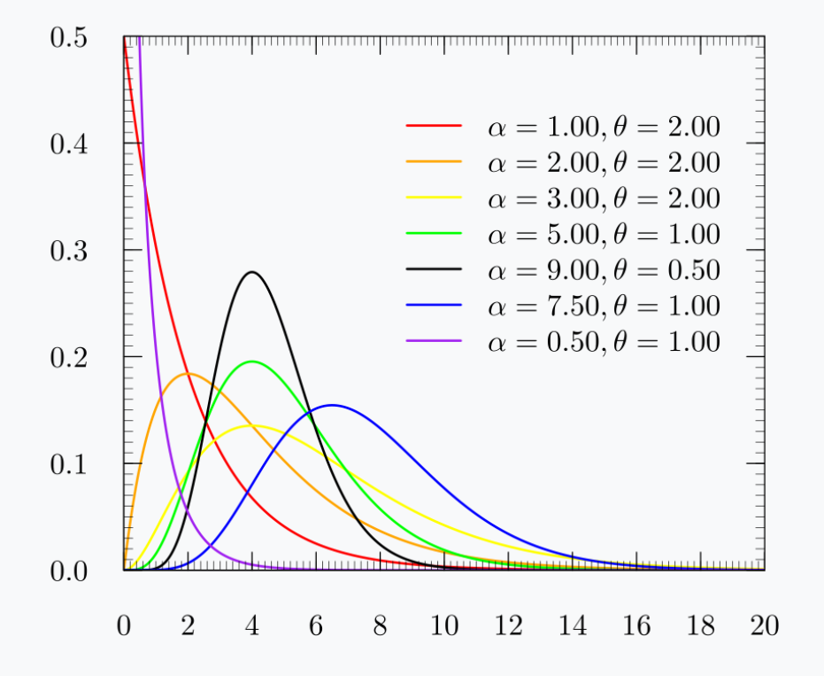
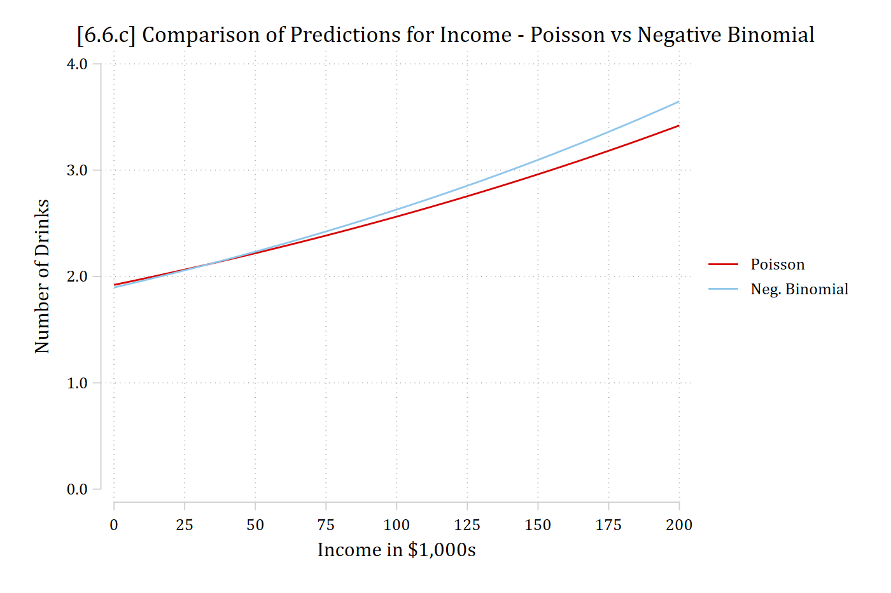
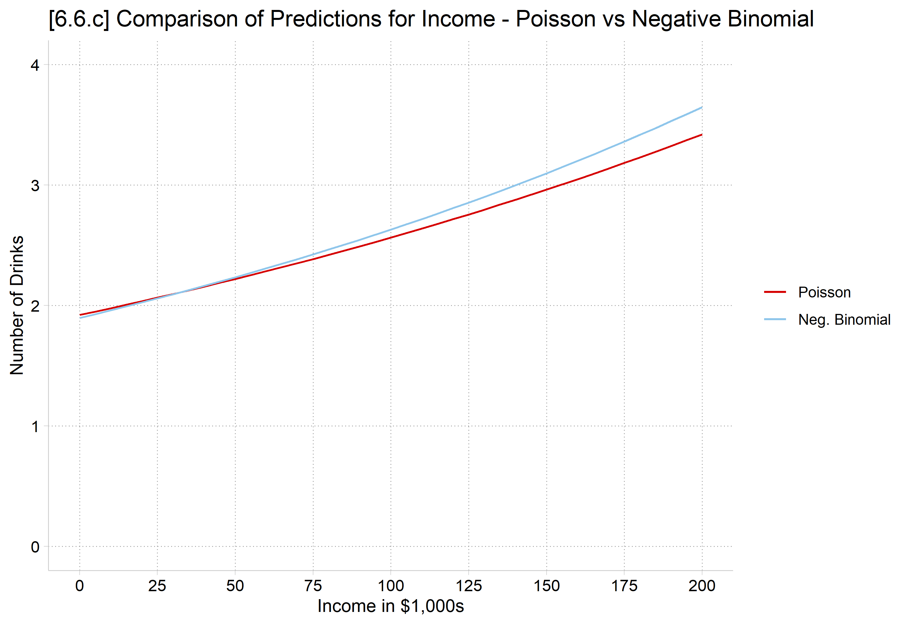
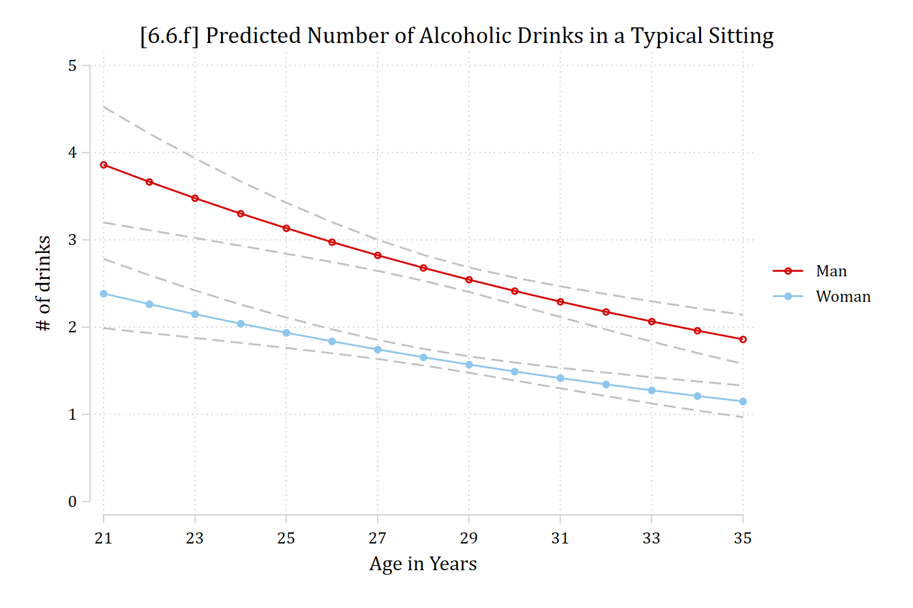
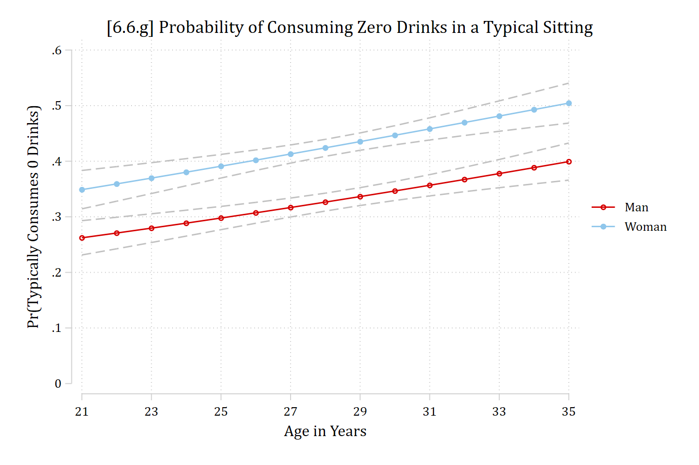

# Simulated data from 6.1 (see the code there)# Show that mixture of two Poissons is not Poissonmixture <-bind_rows("μ = 1.5"=pr_count(sim$y1_5, 10),"μ = 3"=pr_count(sim$y3, 10),"μ = 4.5"=pr_count(sim$y4_5, 10),"Mixture of μ = 1.5 & μ = 4.5"=data.frame(k =0:10,pr = (pr_count(sim$y1_5, 10)$pr +pr_count(sim$y4_5, 10)$pr) /2),.id ="dist") |>mutate(dist =factor(dist, levels =unique(dist)))ggplot(mixture, aes(x = k, y = pr, color = dist)) +geom_line() +geom_point() +scale_x_continuous(breaks =seq(0, 10, 2)) +labs(title ="Mixture of Poisson distributions is not a Poisson distribution",x ="# of successes", y ="Pr(y = m)", color =NULL)

Mixing distributions for the negative binomial model
A mixture of two Poisson distributions (e.g., μ1 = 1.5 and μ2 = 4.5) will not produce a Poisson (μ = 3) distribution
In the negative binomial model, the Pr(y | x) is a mixture across ν
We assume ν has a gamma distribution with:
E(ν) = 1
Var(ν) = 1/δ ≡ α
The distribution varies in shape with changes in α (see below)
Idea is different people/groups in the data have different count processes governing their observed counts
Each individually is a Poisson process
We observe the pooled/mixed distribution in the data, which is not a Poisson
Details omitted due to space and time. See Long (1997) for more specifics as to how this works

*Gamma distribution varies based on shape parameter α, which we estimate
Negative binomial distribution
The mixture of Poisson PDFs by gamma is a negative binomial distribution
# 6.6.b re-estimate Poisson for comparison to the negative binomialpmod <-glm(drinktime ~ woman + age + college + race + income + spouserole + parrole,family ="poisson", data = ah4)modelsummary(list("Poisson"= pmod, "Neg. Binomial"= nbmod), exponentiate =TRUE,statistic ="statistic", gof_map =c("nobs", "bic"),title ="[6.6.b] Comparison of Poisson and Neg. Binomial Estimates")
[6.6.b] Comparison of Poisson and Neg. Binomial Estimates
Poisson
Neg. Binomial
(Intercept)
14.040
14.481
(17.153)
(8.675)
womanWoman
0.609
0.618
(-23.208)
(-11.644)
age
0.951
0.949
(-9.265)
(-4.796)
collegeCollege Degree
0.777
0.756
(-10.869)
(-6.183)
raceBlack
0.693
0.718
(-14.069)
(-6.954)
raceNative American
1.330
1.332
(3.085)
(1.351)
raceAsian
0.876
0.897
(-2.282)
(-0.963)
income
1.003
1.003
(7.931)
(4.252)
spouseroleMarried
0.877
0.884
(-6.065)
(-2.851)
parroleParent
0.798
0.777
(-9.697)
(-5.623)
Num.Obs.
4983
4983
BIC
23916.2
19024.6
Estimates of the factor change on the rate (the exponentiated coefficients) are very similar; test statistics (z) are quite different; fit statistics clearly favor negative binomial (more on this soon)
Testing for overdispersion
With overdispersion, Poisson estimates are inefficient with standard errors that are biased
You will almost always find evidence of overdispersion in real data examples
We test H0: α = 0 since when α = 0 the negative binomial is equivalent to Poisson
A likelihood ratio test of H0: α = 0 is
\[G^{2} = 2(\ln L_{NBRM} - \ln L_{PRM})\]
Stata reports this test automatically as the last line in the nbreg output
LR test of alpha=0: chibar2(01) = 4900.12 Prob >= chibar2 = 0.000
odTest(nbmod)
Likelihood ratio test of H0: Poisson, as restricted NB model:
n.b., the distribution of the test-statistic under H0 is non-standard
e.g., see help(odTest) for details/references
Critical value of test statistic at the alpha= 0.05 level: 2.7055
Chi-Square Test Statistic = 4900.1155 p-value = < 2.2e-16
In this example, there is strong evidence of overdispersion
There is evidence of overdispersion, suggesting the Poisson model is not appropriate and instead favoring a negative binomial model.
Interpretation in the negative binomial model
Interpretation based on rates is identical to Poisson
The same methods for predicted probabilities can be used although the formula for calculating predicted probabilities is much less user-friendly:
*6.6.c - Compare predictions on rate from Poisson and nbregestrestore nbmod
(results nbmod are active now)
qui margins, at(income=(0(5)200)) saving(nbpred, replace)estrestore pmod
(results pmod are active now)
qui margins, at(income=(0(5)200)) saving(ppred, replace)combomarginsplot ppred nbpred, noci file1opts(msym(i)) /// file2opts(msym(i)) xlab(0(25)200) ylab(0(1)4) ///legend(order(1 "Poisson" 2 "Neg. Binomial")) ///ytitle("Number of Drinks") xtitle("Income in $1,000s") ///title("[6.6.c] Comparison of Predictions for Income - Poisson vs Negative Binomial", size(medium))
Variables that uniquely identify margins: income _filenumber

# 6.6.c - Compare predictions on rate from Poisson and negative binomialpr_income <-bind_rows("Poisson"=avg_predictions(pmod, by ="income",newdata =datagrid(income =seq(0, 200, 5), grid_type ="counterfactual")),"Neg. Binomial"=avg_predictions(nbmod, by ="income",newdata =datagrid(income =seq(0, 200, 5), grid_type ="counterfactual")),.id ="model") |>mutate(model =factor(model, levels =c("Poisson", "Neg. Binomial")))ggplot(pr_income, aes(x = income, y = estimate, color = model)) +geom_line() +scale_x_continuous(breaks =seq(0, 200, 25)) +scale_y_continuous(breaks =0:4, limits =c(0, 4)) +labs(title ="[6.6.c] Comparison of Predictions for Income - Poisson vs Negative Binomial",x ="Income in $1,000s", y ="Number of Drinks", color =NULL)

Predictions for the rate (# of drinks) are very close
*6.6.f - Predicted # of drinks across rangeof age, for men and womenestrestore nbmod
(results nbmod are active now)
qui margins woman, at(age=(21(1)35))marginsplot, recastci(rline) ciopts(lpat(dash) col(gs12)) ylab(0(1)5) xlab(21(2)35) ///ytitle("# of drinks") xtitle("Age in Years") ///title("[6.6.f] Predicted Number of Alcoholic Drinks in a Typical Sitting",size(medium))
Variables that uniquely identify margins: age woman

In R, for probabilities, specify the negative binomial formula instead of Poisson; see the examples below
# 6.6.f - Predicted # of drinks across range of age, for men and womenplot_predictions(nbmod, by =c("age", "woman"),newdata =datagrid(age =21:35, woman = unique, grid_type ="counterfactual")) +scale_x_continuous(breaks =seq(21, 35, 2)) +scale_y_continuous(breaks =0:5, limits =c(0, 5)) +labs(title ="[6.6.f] Predicted Number of Alcoholic Drinks in a Typical Sitting",x ="Age in Years", y ="# of drinks", color =NULL, fill =NULL)
*6.6.g - Pr(y=0) across rangeof age, for men and womenestrestore nbmod
(results nbmod are active now)
qui margins woman, at(age=(21(1)35)) predict(pr(0))marginsplot, recastci(rline) ciopts(lpat(dash) col(gs12)) ylab(0(.1).6) xlab(21(2)35) ///ytitle("Pr(Typically Consumes 0 Drinks)") xtitle("Age in Years") ///title("[6.6.g] Probability of Consuming Zero Drinks in a Typical Sitting",size(medium))
Variables that uniquely identify margins: age woman

# 6.6.g - Pr(y=0) across range of age, for men and womenpr0_nb <-predictions(nbmod, type ="response",newdata =datagrid(age =21:35, woman = unique, grid_type ="counterfactual"),hypothesis =~I(mean(dnbinom(0, size = nbmod$theta, mu = x))) | age + woman)ggplot(pr0_nb, aes(age, estimate, ymin = conf.low, ymax = conf.high, color = woman, fill = woman)) +geom_ribbon(alpha = .2, color =NA) +geom_line() +scale_x_continuous(breaks =seq(21, 35, 2)) +scale_y_continuous(breaks =seq(0, .6, .1), limits =c(0, .6)) +labs(title ="[6.6.g] Probability of Consuming Zero Drinks in a Typical Sitting",x ="Age in Years", y ="Pr(Typically Consumes 0 Drinks)", color =NULL, fill =NULL)
In R, for Pr(y = #) with negative binomial models, use dnbinom(). Negative binomial probabilities depend on both the predicted count and the overdispersion parameter, so supply both: dnbinom(#, size = nbmod$theta, mu = x).
avg_comparisons(nbmod, variables =list(woman ="reference", age =c(26, 31)),comparison =function(hi, lo)dnbinom(0, size = nbmod$theta, mu = hi) -dnbinom(0, size = nbmod$theta, mu = lo))
Term Contrast Estimate Std. Error z Pr(>|z|) S 2.5 % 97.5 %
age custom 0.0529 0.01104 4.79 <0.001 19.2 0.0313 0.0746
woman Woman, Man 0.0980 0.00841 11.65 <0.001 101.9 0.0816 0.1145
Type: response
Women’s average probability of having zero drinks is about 10 percentage points higher than men’s.
Across the trimmed range of age, the probability of having zero drinks increases by about .05.